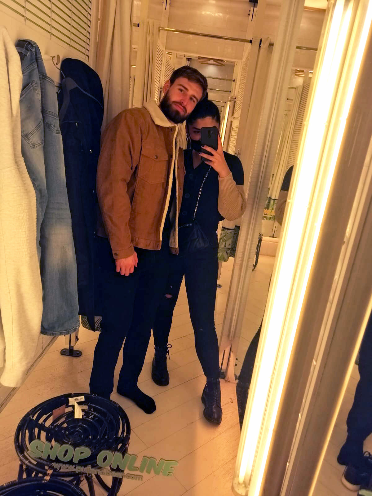
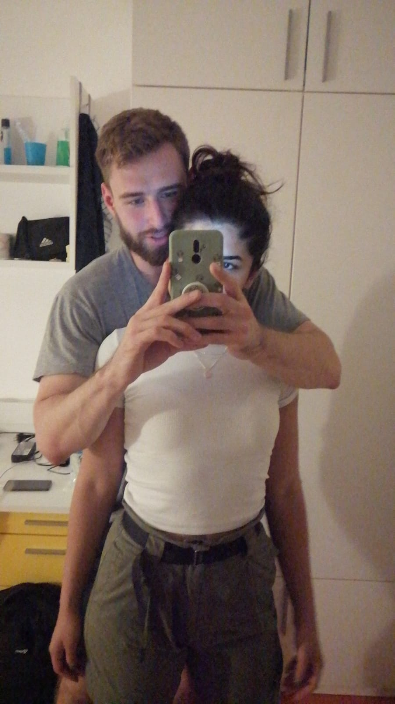
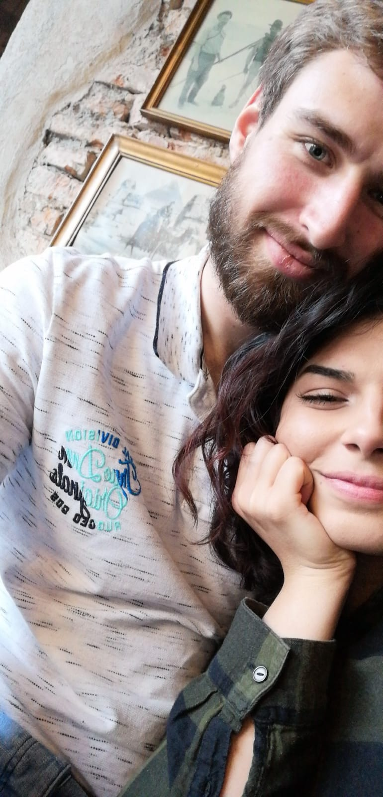
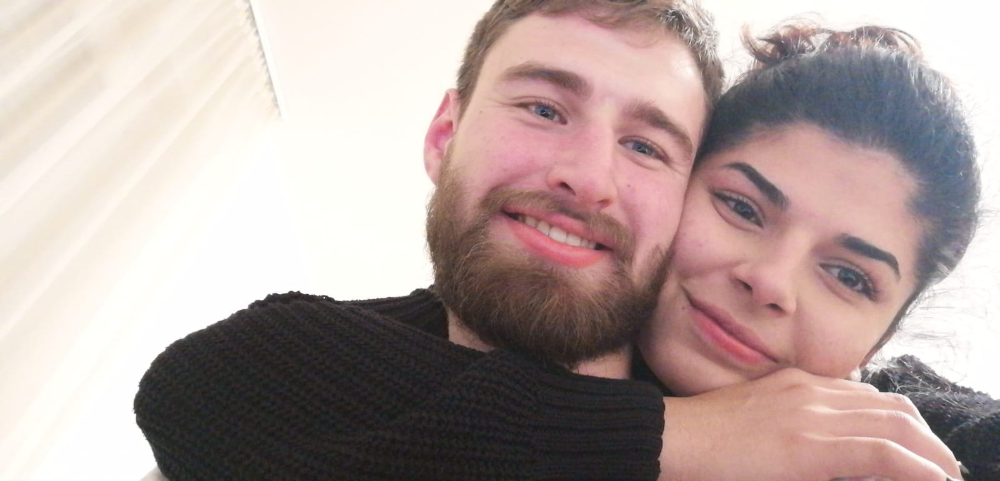
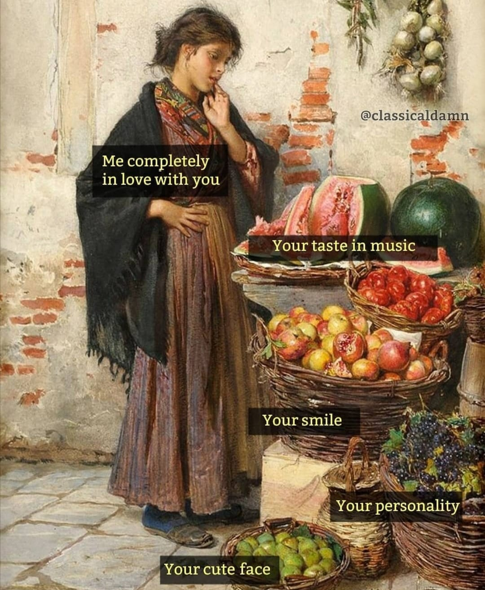
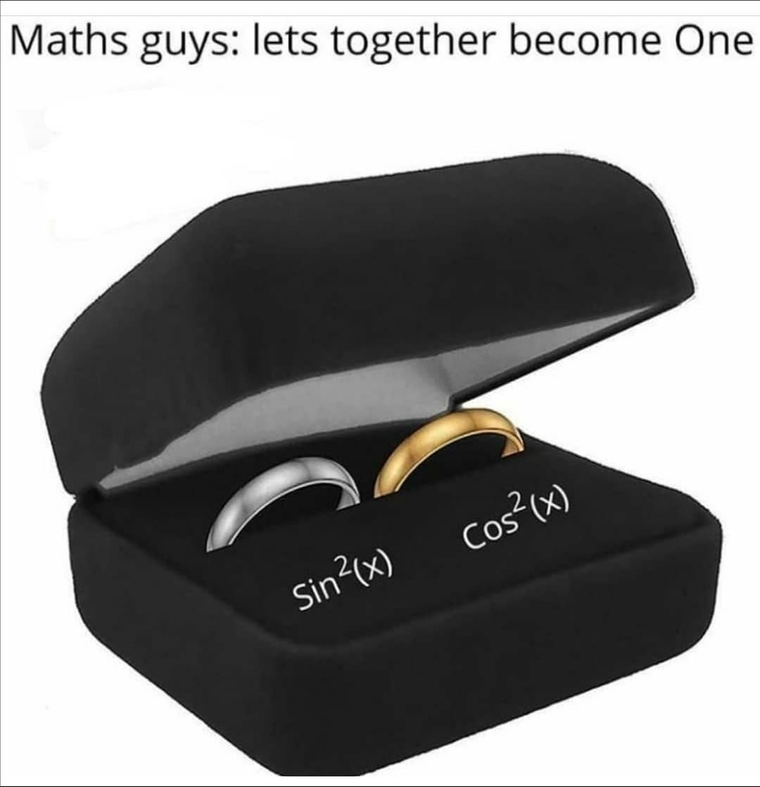
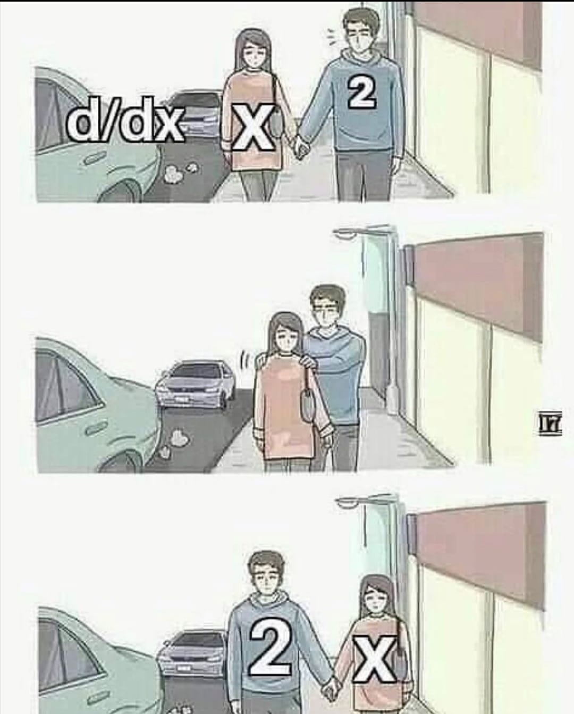
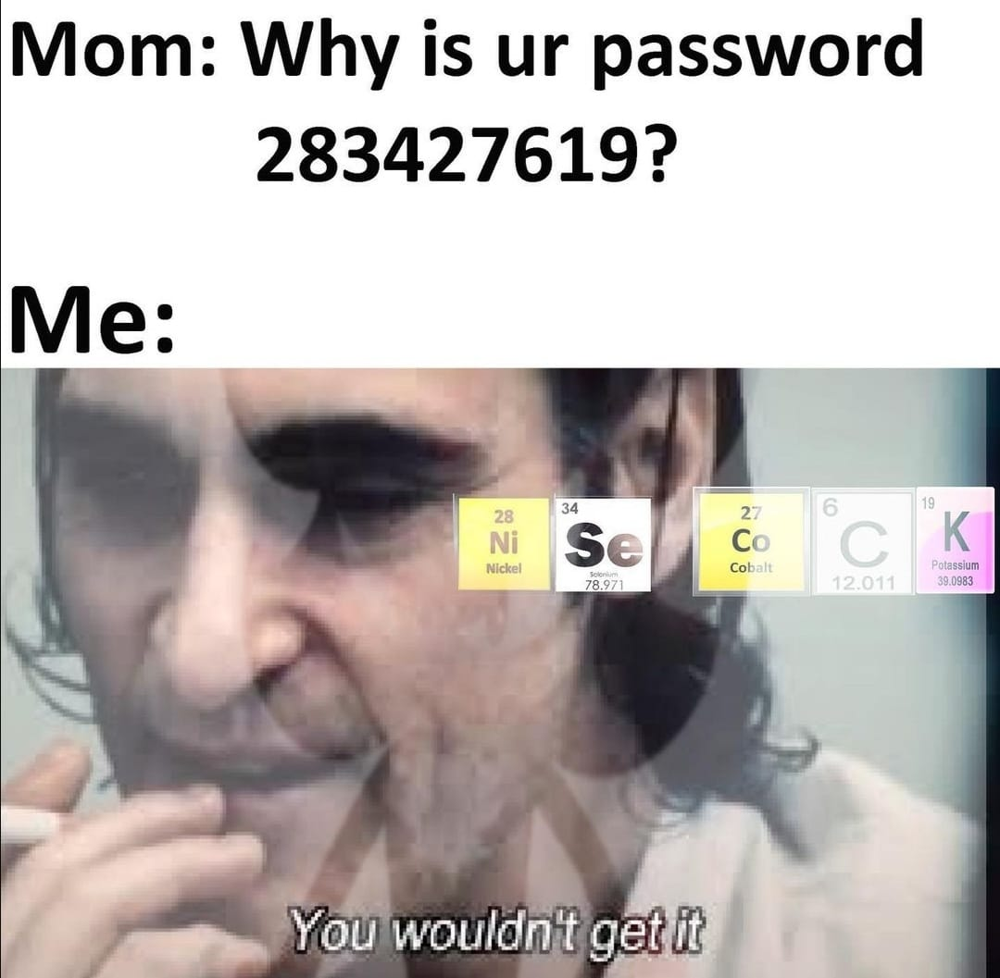
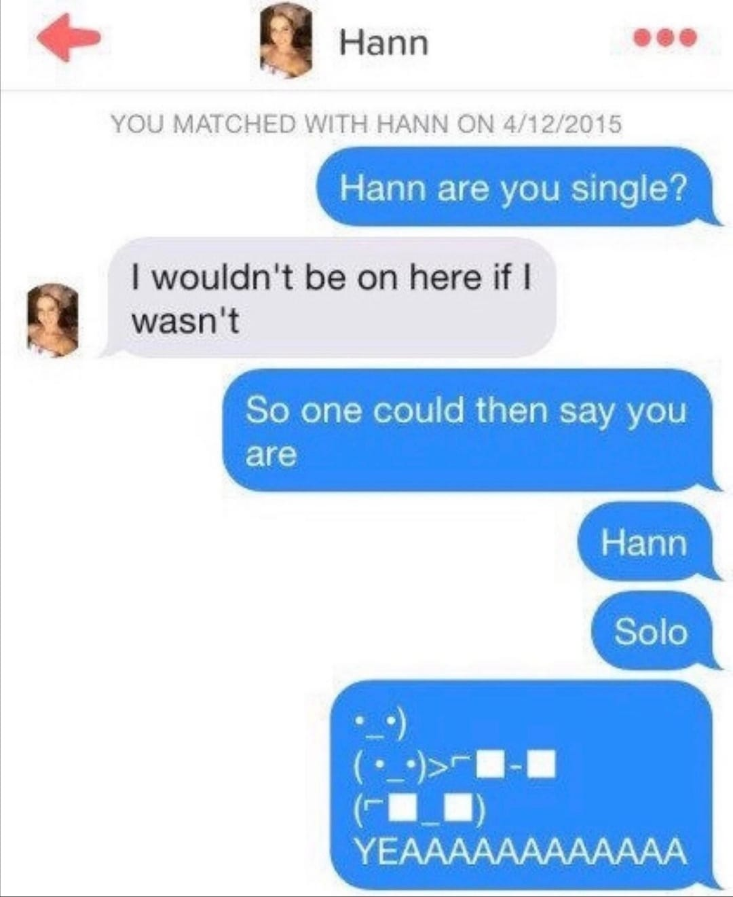
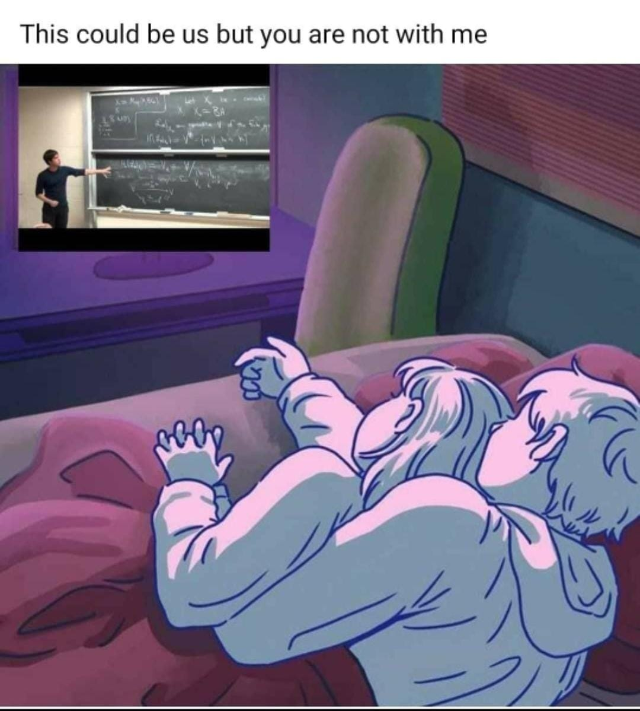

7.12.2020. Dan drugi
Kak smo sladak par
Danas sam ti odlićila reći zašto smo mi savršen par uz par fotopriloga.
Osim što smo na prvi pogled predivan par, ima tu mnogo toga više.
Naš nepopravljiv smisao za humor, hoby-i,
planovi za budučnost i duhovna kompatibilnost čini nas bas idealnim parom




8.12.2020. Dan treći
Glazbena podrška
Par pjesmica koje povezujem s tobom
9.12.2020. Dan četvrti
Ideje za date
Dizajniraj savršeni date već danas, jer zašto bi baš uvijek sve bilo po mom!
10.12.2020. Dan peti
Meme day






11.12.2020. Dan šesti
Receptichy
Brzi i jednostavni recepti za kuhara u usponu !
energetske pločicepalačinke
satraš
marinada za piletinu
topli sendvići
kuhano vino
topla jela
12.12.2020. Dan sedmi
Ispovjest
Danas sam odlučila pustiti srcu i duši da se izraze.
Kada sam te upoznala nisam ni mogla zamisliti da ću biti ovdje.
Još više mi je nevjerojatno kako me osvojio catfish hahahah.
Neka, drago mi je i to jako! Hvala ti što si mi zaokrenuo svijet za 180 stupnjeva.
Nisam ni sanjala da mogu biti ovoloko sretna i voljena.
Žao mi je što se nekada čini kao da ti ne vjerujem da me voliš ali to nije tako, mene samo bude strah da ne izgubim ovo, jer nikad takvo nešto nisam osjetila.
Tvoja dobrota je zarazna i zahvaljujući tebi trudim se svaki dan biti što bolja verzija sebe. Inspirira me tvoj trud i energija.
Mogla bih te slušat kako mi objašnjavaš nešto do kraja života. Dapaće želim gledat taj osmjeh i te oći do kraja života.
Neznam jesam li ti ikad rekla, ali osječam se tako sigurno u tvojem zagrljaju,kao da mi ni metak ništa ne može.
Tvoje ruke moje su utočište od ovog ružnog svijeta. Nadam se da ti je ljepo samnom i da ću te još dugo moći gnjaviti.
Želim te učini najsretnijim čovjekom jer ti upravo to činiš meni. Tako mi nedostaješ. Nedostaju mi tvoji zagrljaji, poljupci, dodiri , tvoj miris.
Kad bi samo mogao vidjei sebe mojim oćima, tada bi znao koliko mi značiš. Hvala ti na prilici , što imam čast biti tvoja cura.
Što god bilo među nama uvijek ću te pamtiti kao nešto najljepše što mi se dogodilo u životu. Zahvaljujući tebi poćela sam prihvačati sebe, nikad se do sad nisam osjecala dovolno vrijednom.
Hvla što me trpiš i moje ispade tuge i straha. Znam da ti nekad nije lako samnom, znam da me teško razumjeti i voljeti, ali znaj da me najbolje razumiješ od svih ljudi koje poznajem.
Dala bih sve što imam, kad bi mogla vječno uživati utvojoj blizini ali znam da je to sebična želja. Stoga nadam se da ću što duže imati tu privilegiju.
VOLIM TE!
(Whos crying, not me!:'))
13.12.2020. Dan osmi
TV-vodič (movies/series to watch)

.
14.12.2020. Dan deveti
10 stvari koje volim na tebi
- 1. Tvoj osmjeh
- 2. Tvoje oći i male bore oko njih
- 3. Tvoj zagrljaj
- 4. Tvoj miris
- 5. Kako trepčeš dok razmilaš
- 6. Kako prebciš nogu preko mene dok me maziš
- 7. Tvoje meke usne
- 8. Tvoje poljupce i kako me privučeš bliže
- 9. Kako me paziš dok šetamo
- 10. Kad se lupiraš u mojoj odjeći
15.12.2020. Dan deseti
Zadnji dan
Priča staje ovdje. Nažalost nisam u mogučnosti više šutit o ovome. Ti si neizvjestan a ja tesko sutim o poklonima hahah. Htjela bih ti još samo reći koliko sm ti zahvalna što postojiš i što imam prliku biti ovdje. Nadam se da će ti se svidjeti ovaj uranjeli dio poklona. :*